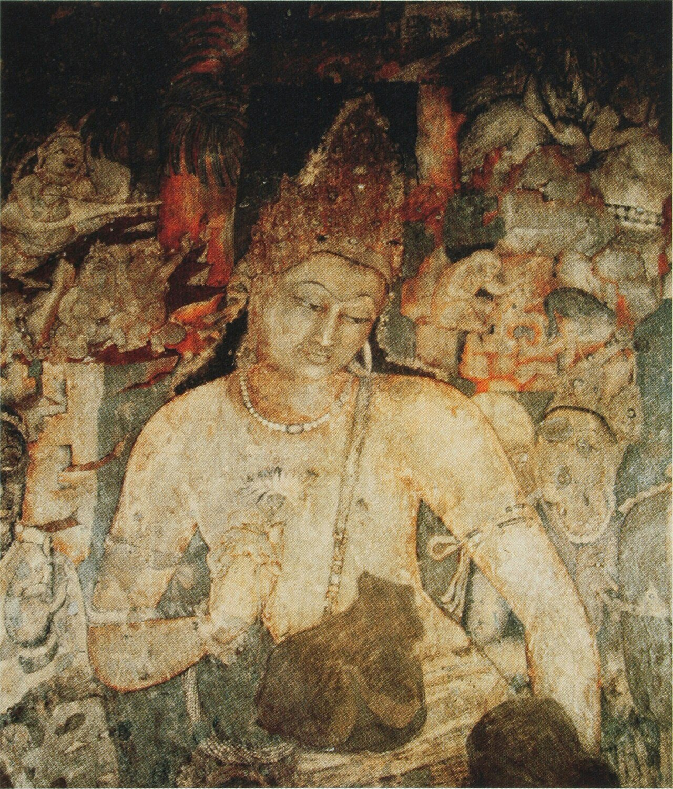
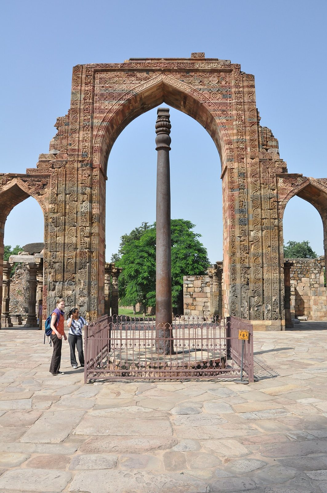
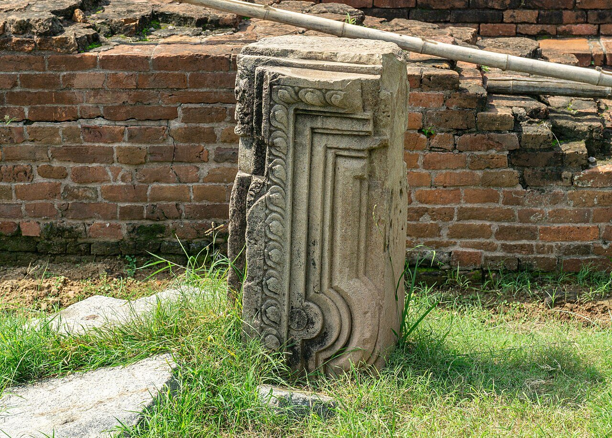

사진 · 아잔타 석굴 연화수보살
중학교 역사① · 3단원 세계 종교의 확산과 지역 문화의 발전
굴인도의 왕조 변동과 힌두교
아잔타 석굴 1굴 연화수보살 · 퍼블릭 도메인
“불교가 태어난 인도에서
불교가 태어난 인도에서
왜 힌두교가 널리 퍼졌을까?
사실굽타 왕조, 4~6세기
해석힌두교는 무엇을 품었을까
확장오늘 인도의 종교
굽타
사실4세기 북인도를 다시 통일
해석인도 고전 문화의 꽃
확장‘황금기’라고 부른 사람은 누구

사진 · 1,600년 동안
녹슬지 않은 기둥?
1,600년 동안
녹슬지 않은 기둥?
사실굽타 시대의 철 기둥
해석뛰어난 금속 기술
확장과학자들이 찾은 까닭
델리의 철 기둥 · 사진 Aiwok · CC BY-SA 3.0
힌두교의 세 신
브라흐마창조
비슈누유지
시바파괴와 재생
0
사실자릿값과 영(0)
해석인도에서 이슬람 세계로
확장왜 ‘아라비아’ 숫자라고 부를까

사진 · 세계에서 가장 오래된
대학?
세계에서 가장 오래된
대학?
사실날란다 사원, 5세기
해석현장도 이곳에서 공부했다
확장‘대학’은 알맞은 말일까
날란다 사원 유적 · 사진 Sumitsurai · CC BY-SA 4.0
불교는 왜
약해졌을까?
설명 1힌두교가 부처를 품다
설명 2왕과 상인의 후원이 줄다
설명 3사원이 파괴되다
바닷길을 따라
앙코르 와트캄보디아 · 힌두 → 불교
보로부두르인도네시아 자와 · 불교
발리인도네시아 · 힌두교
사진 · 후원
후원이 굴을 파게 한 사람은 누구였을까?
아잔타 석굴 1굴 연화수보살 · 퍼블릭 도메인
카스트의 오늘
사실헌법은 차별을 금지한다
해석그래도 남아 있는 것
확장보호하는 제도
“인도에서 힌두교가 널리 퍼진 까닭은 이다.